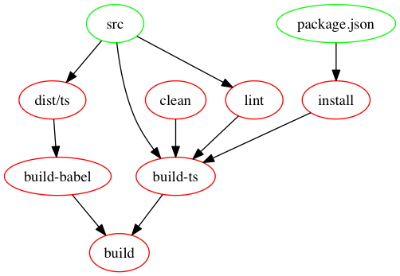

- Hacking Thursday 值日生
- GitHub: https://github.com/bcbcarl
- 熟悉 React, Redux, ES2015 和 Functional JavaScript
- 目前已在數個專案上使用 Makefile 管理前端開發流程
$ tree hello-api ├── Makefile ├── README.md ├── api.js ├── dist │ ├── babel │ ├── release │ └── ts ├── package.json ├── hello-api.tar.gz ├── server.js ├── src ├── test ├── tsconfig.json ├── tsconfig.prod.json └── tslint.json
In GNU Make, you must start a command with a [tab] character.
$(TARGET): $(DEP1) $(DEP2) $(DEP3) # `$?` contains a list of dependencies. @echo $? # `$@` evaluates to current TARGET name. @echo $@ @$(COMMAND1); $(COMMAND2); $(COMMAND3)
.PHONY: build-babel build-babel: $(JS_DIR) @$(RM) $(BABEL_DIR) @NODE_ENV=production $(BABEL) $(JS_DIR) -d $(BABEL_DIR) $(BABEL_DIR): $(JS_DIR)
| Operator | Type | Description |
|---|---|---|
| = | Lazy Set | Values within it are recursively expanded when the variable is used, not when it's declared. |
| := | Immediate Set | Values within it are expanded at declaration time. |
| ?= | Set If Absent | Setting of a variable only if it doesn't have a value. |
| += | Append | Appending the supplied value to the existing value. |
You can create a graph of dependencies from GNU Make using makefile2graph.
| Options | Description |
|---|---|
| -B | Unconditionally make all targets. |
| -n | Print the commands that would be executed, but do not execute them. |
| -d | Print debugging information in addition to normal processing. |
make -Bnd build | make2graph | dot -Tpng -o make-build.pngmake build
make dist
make watch
{
"scripts": {
"clean": "make clean",
"distclean": "make distclean",
"lint": "make lint",
"build:ts": "make build-ts",
"build:babel": "make build-babel",
"build": "make build",
"dist": "make dist",
"watch": "make watch",
"serve": "make serve",
"start": "make start",
"test": "make test",
"release": "make release"
}
}
index.ts:
import { fetchPosts } from "./reddit";
export const reddit = { fetchPosts };
reddit.ts:
export const fetchPosts = async (reddit: string) => {
try {
const json = validate(fetchPostsSchema, await get(`/r/${reddit}.json`).end());
return json.data.children.map((child) => child.data);
} catch (error) {
throw error;
}
};
make watch & make servefetchPosts.
api.reddit
.fetchPosts('vuejs')
.then(x => console.log(x));
hello-api NPM packagemake dist to build NPM package.tar tvf hello-api.tar.gz to check the its content.drwxr-xr-x 0 carlsu staff 0 11 8 17:51 ./ -rw-r--r-- 0 carlsu staff 210 11 8 17:51 ./index.js -rw-r--r-- 0 carlsu staff 1169 11 8 17:51 ./package.json -rw-r--r-- 0 carlsu staff 2506 11 8 17:51 ./reddit.js -rw-r--r-- 0 carlsu staff 2349 11 8 17:51 ./reddit.schema.js drwxr-xr-x 0 carlsu staff 0 11 8 17:51 ./utils/ -rw-r--r-- 0 carlsu staff 5725 11 8 17:51 ./utils/agent.js -rw-r--r-- 0 carlsu staff 1289 11 8 17:51 ./utils/index.js
This package comes from Hello API dev server which built with make dist.
Add hello-api to NPM dependencies and install it immediately.
package.json:
"dependencies": {
"hello-api": "http://localhost:3003/hello-api.tar.gz"
}
src/sagas/index.js:
import { reddit as redditApi } from 'hello-api';
export function* fetchPosts(reddit) {
yield put(requestPosts({reddit}));
const posts = yield call(redditApi.fetchPosts, reddit);
yield put(receivePosts({
reddit,
posts,
receivedAt: Date.now()
}));
}
npm install to install the package we just built.npm start to start the app.